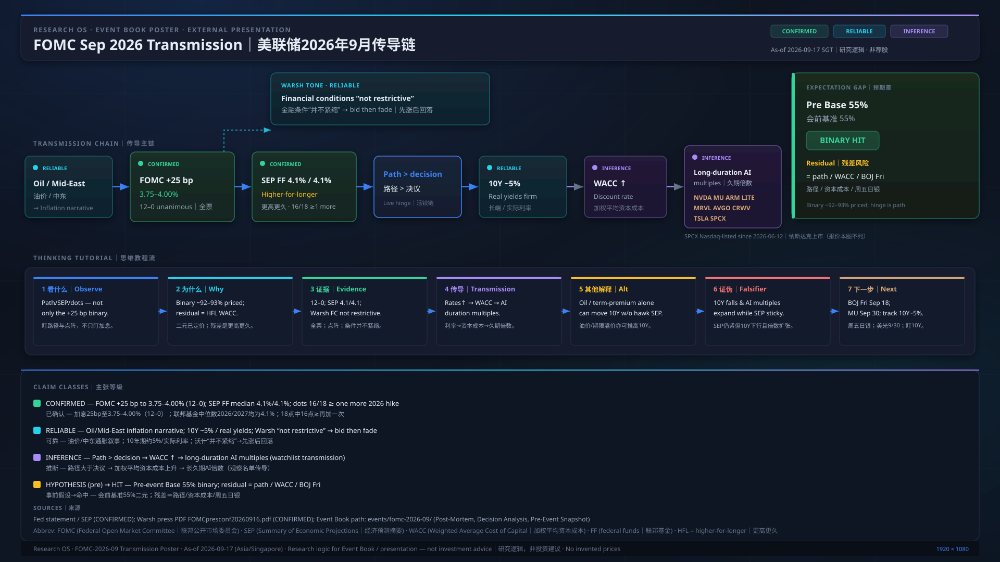

Source｜来源: Fed statement/SEP; Warsh press PDF; Event Book events/fomc-2026-09/. Export twin: charts/exports/2026-09-17-fomc-transmission-poster.svg. SPCX Nasdaq-listed since 2026-06-12. No invented prices. Claim classes on poster.
events/fomc-2026-09/
charts/exports/2026-09-17-fomc-transmission-poster.svg